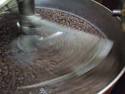

美味しさを求めて
考えるカフェの問いは、どんなコーヒーが長く愛されるコーヒーだろうか。こんな問いに応えることを大切にしています。
毎日飲むコーヒーだから体に優しいコーヒーを求めたらこんなコーヒーになりました。
美味しいコーヒーをお届けするために……。
深煎りコーヒー豆専門店として新鮮なコーヒーをお届けることを心がけています。そのために、焙煎の日をお知らせしております。
それが美味しいコーヒーをお届けする最低条件だと考えております。
香珈のコーヒーで新しいコーヒーの味を発見して下さい。

考えるカフェの問いは、どんなコーヒーが長く愛されるコーヒーだろうか。こんな問いに応えることを大切にしています。
毎日飲むコーヒーだから体に優しいコーヒーを求めたらこんなコーヒーになりました。
美味しいコーヒーをお届けするために……。
深煎りコーヒー豆専門店として新鮮なコーヒーをお届けることを心がけています。そのために、焙煎の日をお知らせしております。
それが美味しいコーヒーをお届けする最低条件だと考えております。
香珈のコーヒーで新しいコーヒーの味を発見して下さい。

静かに美味しい珈琲が飲みたい。
珈琲の香りから、やすらぎを感じ
珈琲の味わいが、心豊かにしてくれる。
こんな珈琲を飲みたいと思い焙煎を始めました。
珈琲は活きています。
鮮度が大切。
珈琲豆は洗練された物を選び。オーガニックの豆も提供しています。時間をかけて丁寧に悪い豆を取り除くハンドピックと言う作業を行います。一粒でも悪い豆があると珈琲が台無しになってしまうからです。
新鮮さを保つために、注文を承ってから焙煎を行います。手回し式の遠赤外線効果のある焙煎機を使い、手焼きしています。一度に焙煎できるのは700gまでですが、200g〜500gの焙煎が美味しく出来上がります。
焙煎の後にもう一度ハンドピックを行い、焙煎しないと分からない悪い豆を取り除きます。
こうして、香珈珈琲の珈琲は出来上がります。
（手焼き焙煎の豆は予約販売のみになりました。）
鮮度が大切とは言うものの、焙煎し立ての時は、まだ味が落ち着かないため一日以上たってから飲むのがいいです。
また、真空パックで新鮮さを保てると考えがちですがこれは間違いです。焙煎したての豆からはガスが発生するため真空にしてもすぐに袋が膨らんでしまい真空にする意味がありません。
珈琲豆は焙煎直後から鮮度が落ちていきます。特に、豆を挽いてからはとても早く鮮度を失っていきます。できれば、ミルを買って珈琲を淹れる前に挽くことをお勧めします。
少し早起きして、ミルで珈琲の豆を挽く。いつもの朝の慌ただしさと違う、ゆったりとした気持ちになれます。
焙煎する人の珈琲への姿勢が分かること。本当はこれだけで充分なのですが、始めての店ではそういう訳にもいかないですよね。そこで、ハンドピックがちゃんとできているか確認することが大切です。
私は、家庭で美味しい珈琲を飲んで頂きたい。珈琲店で飲むならネルドリップのコーヒーを飲みたいです。しかし、家庭でコーヒーメーカーやペーパーフィルターで淹れて美味しい珈琲を——というのが香珈珈琲の目指すものです。
手焼き焙煎豆は予約販売のみです。手焼き以外の豆は店舗にて販売しています。
香珈珈琲はフレンドシップのお店です。フレンドシップのお知らせ登録をお願いします。
次回フレンド募集時にご連絡しますのでそれまでしばらくお待ち下さい。ご案内を希望される方は下記のフォームをご利用下さい。
香珈珈琲フレンドは、生活の一部としてのコーヒーを通じて自分らしい生活や働き方を見つけることができます。コーヒーの焙煎やドリップの仕方を楽しく学べるとともに友達が増えます。